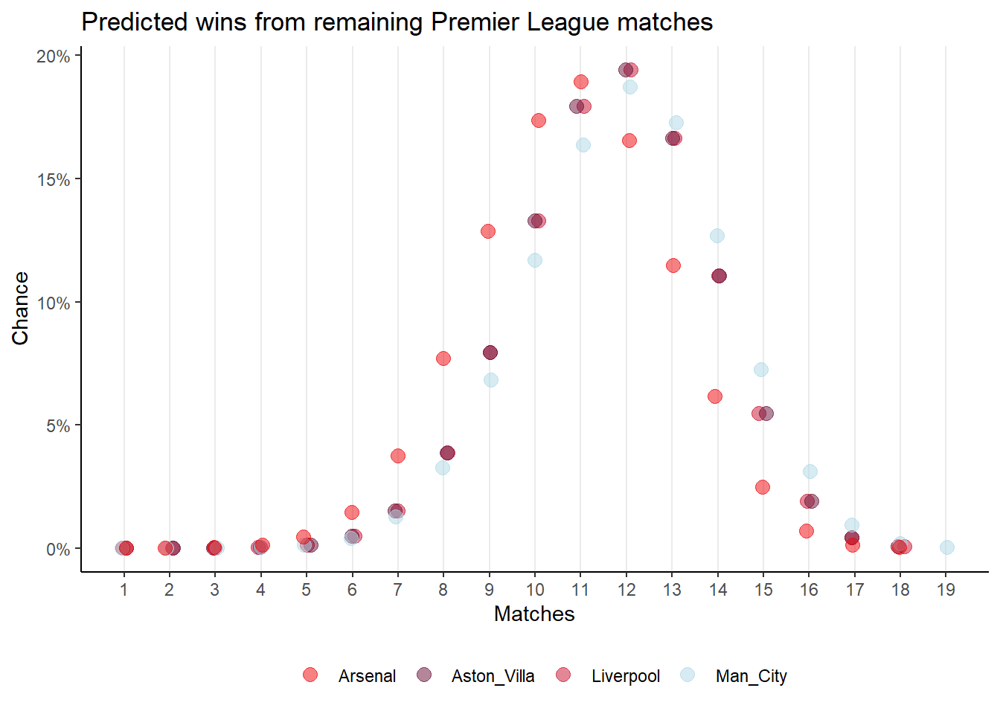
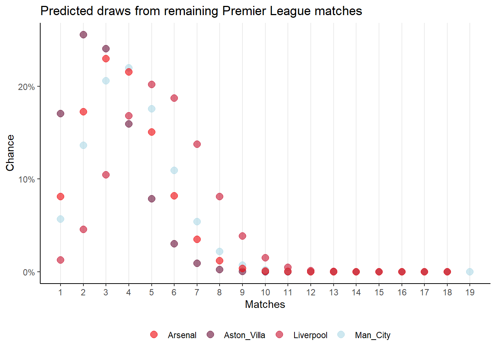

| Club | Matches | Pred. Wins | Pred. Draws | Pred. Losses | Pred. Points | Pred. Total |
|---|---|---|---|---|---|---|
| Liverpool | 18 | 12 | 5 | 1 | 41 | 86 |
| Aston_Villa | 18 | 12 | 2 | 4 | 38 | 80 |
| Man_City | 19 | 12 | 4 | 3 | 40 | 80 |
| Arsenal | 18 | 11 | 3 | 4 | 36 | 76 |
Summary
At the half-way point in the 2023/24 Premier League season, I was reading the ESPN article What’s wrong at Arsenal?. It’s really good and full of complicated analysis using expected goals, heatmaps and the inevitable nod to AI. It ends on Arsenal’s chances of winning the league at 11% on January 5th 2024.
I’d previously read Oliver Johnson’s Substack on New Year’s resolutions which included a binomial model of Ronny O’Sullivan’s frame win rate.
Just for fun, I wondered how a binomial model would compete with more sophisticated models for predicting the outcome of the second half of the Premier League season.
Section 1.1 has more details, but if the top four hold their form, then a simple maximum probability prediction from binomial distributions predicts Liverpool to win the league as shown in Table 1.
In the current season Manchester City with 63% and 16% win and draw rates respectively are performing well below average of a win rate of 76% and draw rate of 11% in the last six seasons.
Meanwhile Liverpool have a win rate of 66% and draw rate of 21% over the same period, close their current 65% win rate. Their draw rate for the current season is above average at 30%
Assuming there is regression to the mean, I also calculated Table 2 for their six season mean win rates for Manchester City and Liverpool for the remaining matches. In this scenario Manchester City beat Liverpool by two points.
I don’t expect these models to stand up well, but they show how fine the margins are. A regression to the mean in draw rate for Liverpool corresponding with a corresponding change for Manchester City is enough to change the outcome.
It would be a surprise if Aston Villa won the league, an even bigger one if Arsenal somehow won.
It would also be surprising if any team ran away with the title, so it should be an exciting second half to the season whatever happens.
| Club | Matches | Pred. Wins | Pred. Draws | Pred. Losses | Pred. Points | Pred. Total |
|---|---|---|---|---|---|---|
| Man_City | 19 | 15 | 2 | 2 | 47 | 87 |
| Liverpool | 18 | 12 | 4 | 2 | 40 | 85 |
The model
I got data for the 2023/24 seasons from Footystats, and from Wikipedia for Liverpool’s seasons and Manchester City’s seasons.
Table 3 shows the statistics for the top four positions on the 2nd of January 2024.
| club | matches_played | matches | wins | draws | loss | pts | prct_win | prct_draw | prct_loss |
|---|---|---|---|---|---|---|---|---|---|
| Liverpool | 20 | 18 | 13 | 6 | 1 | 45 | 0.650 | 0.300 | 0.050 |
| Aston_Villa | 20 | 18 | 13 | 3 | 4 | 42 | 0.650 | 0.150 | 0.200 |
| Man_City | 19 | 19 | 12 | 4 | 3 | 40 | 0.632 | 0.211 | 0.158 |
| Arsenal | 20 | 18 | 12 | 4 | 4 | 40 | 0.600 | 0.200 | 0.200 |
I used the win and draw percentages for each team and their number of remaining matches to generate binomial distributions of the probability of the total number of wins or draws. In the form dbinom(1:x,x,y) where x is the number of matches and y is the probability of winning or drawing.
Figure 1 shows the distribution for wins and Figure 2 shows the distribution for the draws.
For a point prediction, I then used the maximum probabilities for wins and draws to calculate the points accrued and subsequent points total for each team for Table 1.


I repeated this using the six year win and draw averages for Manchester City and Liverpool (Table 4) which yields Figure 3 and Figure 4 respectively. And Table 2.
| club | prct_win | prct_draw | prct_loss |
|---|---|---|---|
| Man_City | 0.763 | 0.110 | 0.127 |
| Liverpool | 0.658 | 0.215 | 0.127 |